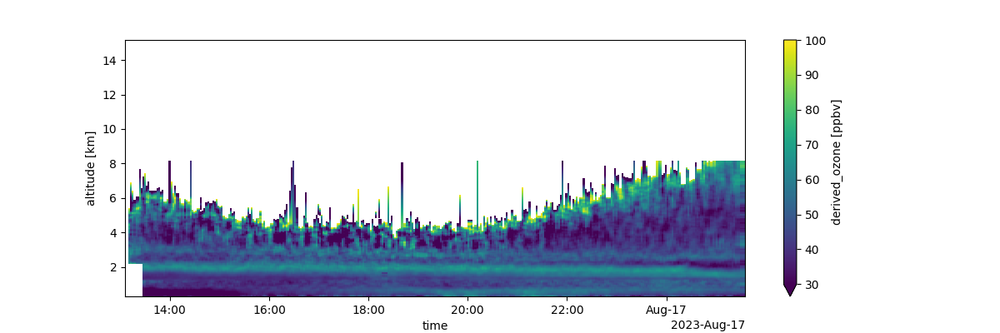

Note
Go to the end to download the full example code
TOLNet Ozone Curtain Plot
This example shows how to acquire TOLNet data from UAH and make a curtain plot.
Initialize API and Find Data
# python -m pip install git+https://github.com/barronh/pytolnet.git
import pytolnet
api = pytolnet.TOLNetAPI()
# Find newest data from UAH
cldf = api.data_calendar('UAH')
# Choose newest?
data_id = cldf.index.values[0]
# Choose specific version
# data_id = 2115
Retrieve and Characterize Data
ds = api.to_dataset(data_id)
df = ds.to_dataframe().reset_index()
print(df.describe())
# Make a curtain plot
qm = ds['derived_ozone'].T.plot(figsize=(12, 4), vmin=30, vmax=100)
qm.figure.savefig(f'derived_ozone_{data_id}.png')

time altitude derived_ozone
count 174096 174096.00000 63538.000000
mean 2023-08-16 19:17:36.874643968 7.72500 48.525455
min 2023-08-16 13:06:59 0.30000 0.015444
25% 2023-08-16 16:10:39 4.01250 40.799999
50% 2023-08-16 19:18:37 7.72500 47.500000
75% 2023-08-16 22:24:22 11.43750 55.299999
max 2023-08-17 01:31:57 15.15000 100.000000
std NaN 4.29549 13.209246
Total running time of the script: ( 0 minutes 3.652 seconds)